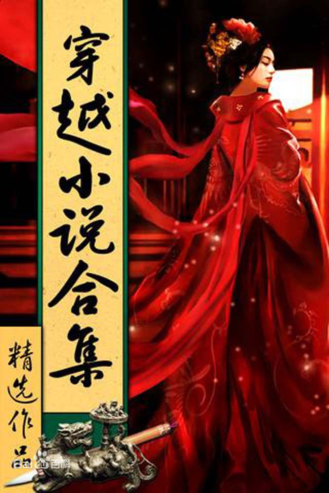

-發展史-

1.探源
一般認為，世界上第一部穿越小說是馬克·吐溫的《康州美國佬在亞瑟王朝》。
2.80/90年代——誕生萌芽
1)中國現當代第一部穿越小說是李碧華的《秦俑》。
2)1989年被改編為電影《古今大戰秦俑情》，程小東導演，張藝謀、鞏俐主演，可謂是穿越時空玄幻片的開山鼻祖。
3)2010年新版電視劇《古今大戰秦俑情》再現，由內地杜淳攜手台灣安以軒主演。
3.00年代-—變革發展
繼《交錯時光的愛戀》、《尋秦記》之後，穿越小說開始如火如荼地發展起來，2000年以後，慢慢演變成一種文學現象，尤其是女性文學現象。
這其中有兩個重要年份：
2006年，金子的《夢迴大清》瑪麗蘇風格將穿越小說的發展推向一個新的高度，從此，穿越到清朝成為穿越小說的一大熱點，無數作者開始跟風寫作，以致有了一個專屬名詞：“清穿”。
2007年，穿越小說的發展迎來“穿越年”。不僅僅在網絡上，書店裡也到處都能見到穿越小說的身影。作家出版社也在2007年以12%的版稅簽下了《木槿花西月錦繡》、《鸞》、《迷途》、《末世朱顏》“四大穿越奇書”（當時預定的是五本，分屬周漢唐宋清五朝，先是《塔里木河》的作者不想跟風，提出修改作品，後又因其他作者談不攏，反正種種原因，最後定了以上這四本），而且保證每本書10萬冊的首印量。這四本穿越小說中的三本全部是清穿文。
4.10年代—成熟創新
從2010年開始，晉江、紅袖等女性網絡文學主站的穿越小說湧現新的發展契機，作家出版社總編室主任劉方指出：“'穿越'是繼玄幻、歷史、盜墓等三波網上閱讀熱潮後的最新網絡閱讀勢力。而且這股風潮來勢更兇，網羅的作品數不勝數，不知道'穿越'的人已經過時了。”
隨著龐大讀者群的形成，穿越小說的作者群，也開始以整體的形像出籠。如四小天后（藤萍、桐華、匪我思存、寐語者）、六小公主（辛夷塢、顧漫、繆娟、金子、李歆、姒姜），八小玲瓏（唐七、滄月、木然千山、明曉溪、米蘭lady、妖舟、媚媚貓、愛爬樹的魚），這些作者的穿越文佔了相當一部分數量。